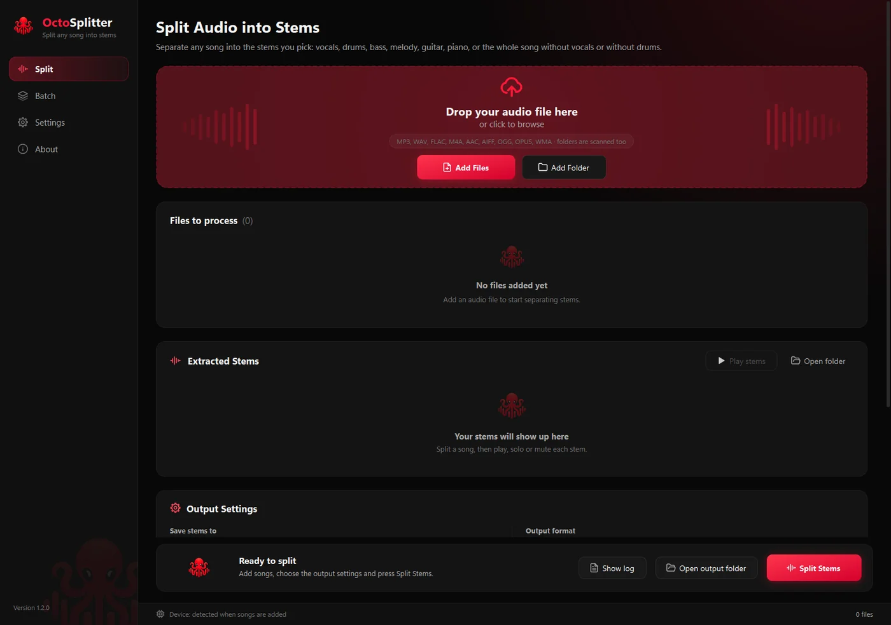
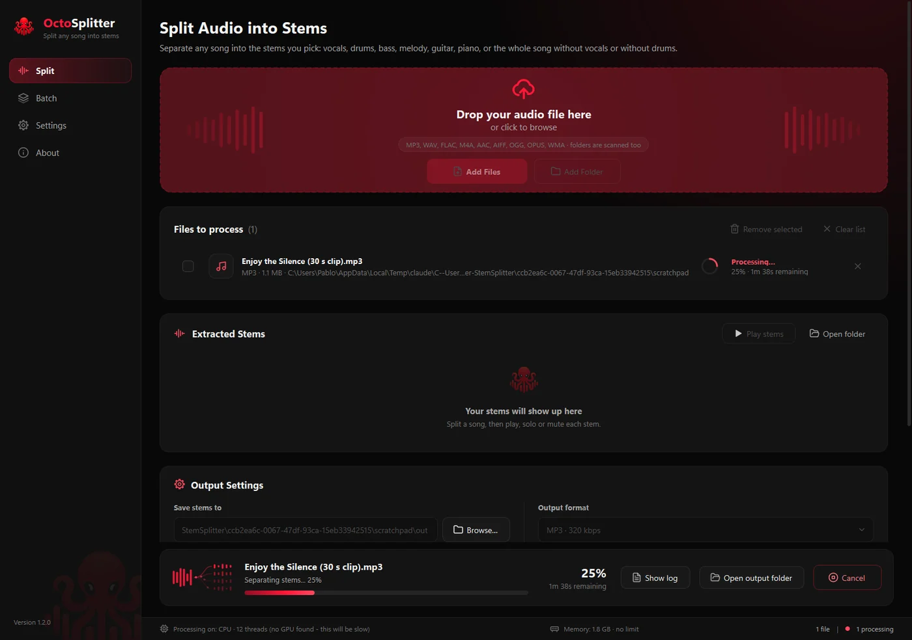
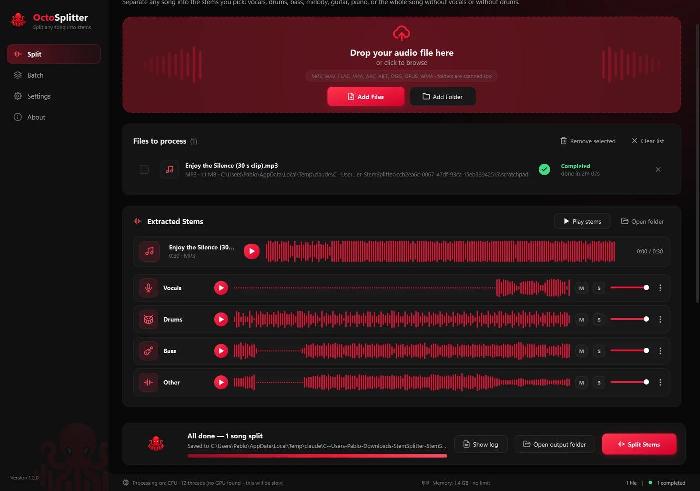

Project 05 — Desktop · AI Audio
OctoSplitter
A desktop app that splits a song into its stems.
About the project
OctoSplitter (formerly StemSplitter) is a desktop app for Windows and macOS that takes a song (MP3, WAV, FLAC, M4A, AAC, OGG, Opus, AIFF, WMA) and splits it into one file per stem: vocals, drums, bass, other, plus guitar, piano, instrumental and a no-drums mix.
It uses BS-RoFormer SW to split the song in one pass and, in Maximum quality, averages in a second vocal model, MelBand-RoFormer. Vocals, drums, bass and other add back up to the original song exactly.
Goal
Make clean stem separation easy for anyone: drag in songs, pick the stems and quality, and get the files, with no command line and no cloud upload.
What it does
State-of-the-art separation
Three presets (Balanced, Maximum, Fast). On the MUSDB18 test set Balanced averages 10.20 dB SDR, against 9.14 dB for the previous version.
Uses your GPU
NVIDIA CUDA on Windows and the Metal GPU on Apple Silicon, with a CPU fallback and a memory governor that keeps the system responsive.
Batch and playback
Queue songs or folders, play each stem with mute, solo and volume, and export MP3 (320, 256 or 192 kbps) or 24-bit WAV.
Updates itself
Checks GitHub releases, downloads only changed files, verifies the new version and rolls back if the check fails. Available in five languages, plus a CLI.
Tech stack
Application
Packaging & delivery
Quality
Screenshots



Runs on Windows and on macOS 14+ with Apple Silicon. There is no hosted site: the app is distributed from GitHub.